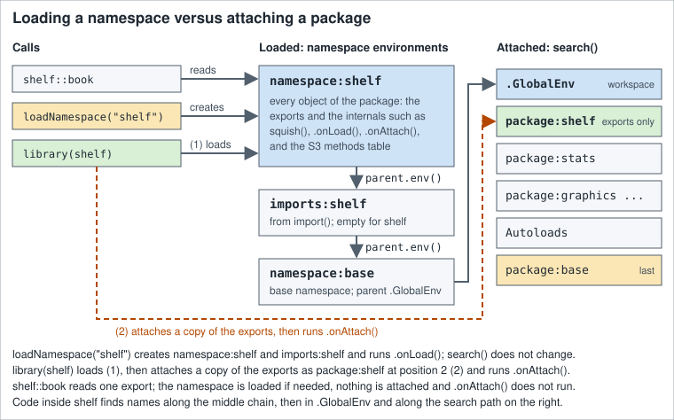

Packages, Libraries and Namespaces
|
This content was generated with the assistance of AI and should be verified against the official documentation before being relied on in production. |
Checked against R 4.6.1 (2026-06-24) on 2026-10-20; R 4.6.2 is scheduled for 2026-10-29. Almost everything on this page is base R: the base, utils and tools packages that ship with R. The examples also use these add-on packages, with the versions they were checked against: the shelf package 0.1.0 (the small package built, documented, tested and checked for real on the Creating Packages page, installed here from the tarball that R CMD build wrote), dplyr 1.2.1 and MASS 7.3-65 (the masking examples; MASS is a recommended package that ships with R), knitr 1.52 and rmarkdown 2.32 (the unloading example), withr 3.0.3 (one helper that changes the working directory for a moment) and tinytest 1.4.3 (the single example that needs the network; the version in its output is whatever CRAN holds on the day). lintr 3.4.0 only checked the scripts. pak 0.11.1 is installed in the checking image and gets one paragraph, but no pak code is run; BiocManager and remotes are named, not installed, and the lines that use them, like every other line that would install something real, are labelled fragments that were never run. A package is the unit in which R code, data and documentation are distributed, and a library is only a folder that holds installed packages. Most of the confusion in this area comes from mixing up four different steps: installing a package into a library, loading its namespace, attaching its exports to the search path, and using one function from it without doing either. This page keeps those four apart, shows the environments behind them, and covers the commands that work on libraries and repositories.
Every example is a script that was run with Rscript on R 4.6.1 with warnings printed as they happen (options(warn = 1)), and the lines that start with #> are what it printed, in the order R printed them (messages and warnings from R’s message stream are shown in place). The scripts also pass the default lintr linters; a # nolint: comment marks a line where the idiom on show is what the linter dislikes: a library() call for a package that the linter’s own session does not have (the shelf package and the throw-away packages of the examples), or a package name that does not exist on purpose. A script that installs anything installs it into a folder under tempdir(), never into the library of the machine, and where an output would name that folder (or the system library of the checking image) the script prints only the last part of the path with basename(); the page never shows a real path. Examples that work on shelf assume that it is installed (the scripts are run with it in the library, as the Creating Packages page leaves it); the first install example below shows how that is done. Shell commands are shown as the user would type them, with ~ for the home directory, and their output is shown as #> lines under them. The names books, loans, shelf_today and loan_days of the running library-shelf scenario come from the section index; this page mostly needs the package built from them, shelf, rather than the data frames.
The page is the first of the "Packages and tooling" group. The startup files that set R_LIBS_USER and the options this page mentions are in Sessions, Workspaces and Startup; the environments that the namespace chain is made of are in Scoping, Environments and Closures; building the package is Creating Packages; a library per project and a lockfile is Reproducible Environments with renv; what Rscript does with arguments and exit codes is Scripts and the Command Line.
Package, library, repository: three words that are not synonyms
The R FAQ answers the question in one entry, 7.29: a package is a standardized collection of material that extends R (code, data or documentation); a library is a place, a directory, where R knows to find the packages it can use, that is, the ones that were installed; and R is told to use a package, which means to load it and add it to the search path, by calling the function library(). So library() takes a package from a library, and the name of the function is the source of the most common mistake: library(ggplot2) does not "load a library". R Installation and Administration opens its chapter on add-on packages with the same terminology note and adds that a library directory is often called a library tree to avoid the confusion. FAQ 7.30 is the companion entry: the question "I installed a package but the functions are not there" has a one-line answer, that the package needs to be loaded with library(). Installing puts files in a library; it does not change the running session at all.
| Word | What it is |
|---|---|
Package |
A directory tree with a |
Library (library tree) |
A directory that contains one subdirectory per installed package. R knows a list of them, |
Repository |
A web or file location that serves packages and an index of them ( |
Namespace |
The environment that holds a package’s code and decides what it can see and what it exports. Every installed package has one; it exists once the package is loaded. |
Loaded |
The namespace exists in the session, with its imports; |
Attached |
The package’s exports were copied into an environment |
The standard packages (base, stats, utils, graphics, grDevices, datasets, methods, tools, parallel, compiler, grid, splines, stats4, tcltk) are part of the R source code and are installed with R; the recommended packages (MASS, Matrix, lattice, survival and others) are included with every binary distribution of R, and the several thousand other packages live in repositories (An Introduction to R, section 13: Packages). The first script asks the session about the difference between the folder, the installed package and the loaded one: the paths are reduced to their last component, because the folders of the machine that ran the examples are not interesting.
# A library is a directory; a package is one folder inside a library.
libs <- .libPaths()
is.character(libs)
#> [1] TRUE
all(dir.exists(libs))
#> [1] TRUE
basename(libs)
#> [1] "site-library" "library"
# .Library is the system library: the packages that ship with R live there.
basename(.Library)
#> [1] "library"
wanted <- c("base", "stats", "utils", "tools", "MASS", "shelf")
intersect(wanted, list.files(.Library))
#> [1] "base" "stats" "utils" "tools" "MASS"
file.exists(file.path(.Library, "stats", "DESCRIPTION"))
#> [1] TRUE
# library() without arguments lists every package of every library.
installed <- library()
class(installed)
#> [1] "libraryIQR"
colnames(installed$results)
#> [1] "Package" "LibPath" "Title"
"stats" %in% installed$results[, "Package"]
#> [1] TRUE
# .packages(all.available = TRUE) returns just the names.
all(c("base", "stats", "utils") %in% .packages(all.available = TRUE))
#> [1] TRUE
# Installed is not loaded, and loaded is not attached.
"tools" %in% .packages(all.available = TRUE)
#> [1] TRUE
"tools" %in% loadedNamespaces()
#> [1] FALSE
"tools" %in% .packages()
#> [1] FALSESource: R documentation: library
library() with no arguments returns an object of class "libraryIQR", a list whose results matrix has one row per installed package (Package, LibPath, Title), and the help page warns that its structure may change in future versions; .packages(all.available = TRUE) gives just the names and installed.packages() gives more columns (versions, dependencies, license, the Built field) but, as its help page warns, it reads several files per installed package and is slow with thousands of packages, so it is not the tool for asking whether one package is installed (see "Where older tutorials differ").
Library paths: where R looks for packages
The folders that R searches are in .libPaths(), a character vector of existing directories, first one first. A call without argument reports them; a call with a character vector sets them to the existing directories of unique(c(new, .Library.site, .Library)), so the new libraries come first, then the site libraries, then the system library. The system library .Library is R’s own library folder; .Library.site is the (possibly empty) site library, site-library under R_HOME unless R_LIBS_SITE or Rprofile.site says otherwise. Since R 4.1.0 .libPaths() has the argument include.site, which leaves the site library out of the new path. The directories are normalised, so the printed form can differ from what you passed, and a directory that does not exist is dropped without a message, which is the usual reason why a library "disappears" from the path after a typo.
# .libPaths() without an argument reports the library search path.
old_paths <- .libPaths()
length(old_paths)
#> [1] 2
# Two new libraries; .libPaths(new) puts them first.
lib_a <- file.path(tempdir(), "lib-a")
lib_b <- file.path(tempdir(), "lib-b")
dir.create(lib_a)
dir.create(lib_b)
.libPaths(c(lib_a, lib_b))
basename(.libPaths())
#> [1] "lib-a" "lib-b" "site-library" "library"
length(.libPaths()) - length(old_paths)
#> [1] 2
# Directories that do not exist are silently dropped.
.libPaths(c(file.path(tempdir(), "no-such-library"), lib_a))
basename(.libPaths())
#> [1] "lib-a" "site-library" "library"
# include.site = FALSE leaves the site library out.
.libPaths(lib_a, include.site = FALSE)
basename(.libPaths())
#> [1] "lib-a" "library"
# Put everything back as it was.
.libPaths(old_paths)
identical(.libPaths(), old_paths)
#> [1] TRUE
# The default personal library is version-specific (on Linux).
r_xy <- paste(R.version$major, sub("\\..*", "", R.version$minor), sep = ".")
default_user_lib <- file.path(
"~", "R", paste0(R.version$platform, "-library"), r_xy
)
identical(Sys.getenv("R_LIBS_USER"), path.expand(default_user_lib))
#> [1] TRUE
# It is only used when the directory exists.
Sys.getenv("R_LIBS_USER") %in% .libPaths()
#> [1] FALSE
dir.exists(Sys.getenv("R_LIBS_USER"))
#> [1] FALSESource: R documentation: .libPaths
At startup R builds .libPaths() from environment variables (the Startup page of this section explains where such variables can be set, and in which order the files are read): R_LIBS first and R_LIBS_USER next (both may hold several directories, separated by colons on Unix-alikes and semicolons on Windows), then the site libraries from R_LIBS_SITE, then the system library. Only directories that exist at that moment are kept. R_LIBS is unset by default; R_LIBS_USER is set by R’s startup code when it is unset or empty, to a folder in the home directory that is specific to the R version: R/<platform>-library/<x.y> on Unix-alikes (for R 4.6.1 that is ~/R/<platform>-library/4.6, where the platform is the canonical string of the build, the value of R.version$platform), R/win-library/<x.y> under LOCALAPPDATA on Windows, and Library/R/<m>/<x.y>/library for the CRAN builds on macOS, where <m> is Sys.info()["machine"], the name of the CPU architecture. Since R 4.2.0 R_LIBS_SITE is set by R the same way, so Sys.getenv("R_LIBS_USER") and Sys.getenv("R_LIBS_SITE") show the defaults from inside a session (before 4.2.0 only the user variable was). The value NULL for either variable means "no directories", and the default user library is used only if the folder exists, which by default it does not: R-admin says so, and install.packages() in an interactive session offers to create the personal library when the first library is not writable. The version-specific folder is deliberate: the compiled code of an installed package is tied to an R series (4.5.x, 4.6.x), so each minor version of R wants its own library, and upgrading R from 4.5 to 4.6 starts with an empty user library that you refill (with update.packages(checkBuilt = TRUE) the packages that were built under an older minor version count as old).
Both variables expand the specifiers %V (R version including the patch level), %v (without it), %p (the platform), %o (the operating system) and %a (the CPU architecture), and %U and %S stand for R’s own defaults, so one .Renviron line (a file of NAME=value lines, not R code) can serve several R versions:
R_LIBS_USER=~/R/library/%v
R_LIBS=~/R/team-libraryThe next script is a short probe that is run several times with different variables in the shell; it prints the library paths under the home directory (shortened with ~), how many of the other paths there are, and the last component of those others (the site and system libraries of the image). The directories are made first with mkdir.
# Show the library paths under the home directory, then count the others.
paths <- .libPaths()
home <- path.expand("~")
mine <- paths[startsWith(paths, home)]
sub(home, "~", mine, fixed = TRUE)
#> character(0)
length(paths) - length(mine)
#> [1] 2
basename(paths[!startsWith(paths, home)])
#> [1] "site-library" "library"Source: R documentation: .libPaths
The four runs, as typed in a terminal and the output of each (the script is saved as show-libs.R):
mkdir -p ~/r-libs/team ~/r-libs/me
R_LIBS=~/r-libs/team:~/r-libs/me Rscript show-libs.R
#> [1] "~/r-libs/team" "~/r-libs/me"
#> [1] 2
#> [1] "site-library" "library"
R_LIBS_USER=~/r-libs/me Rscript show-libs.R
#> [1] "~/r-libs/me"
#> [1] 2
#> [1] "site-library" "library"
R_LIBS_USER=NULL R_LIBS_SITE=NULL Rscript show-libs.R
#> character(0)
#> [1] 1
#> [1] "library"
R_LIBS_USER=~/r-libs/absent Rscript show-libs.R
#> character(0)
#> [1] 2
#> [1] "site-library" "library"The first run shows the order (R_LIBS directories first, in the order written), the second R_LIBS_USER, the third the value NULL for the user and site variables that leaves only the system library, and the fourth the rule that a user library which does not exist is not on the path. The rest is advice that has stood the test of time: keep the system library for what ships with R and put everything else in a user or project library (the installed.packages() help calls this the recommended setup of many professionals), set R_LIBS_USER in .Renviron rather than calling .libPaths() in .Rprofile (the startup page of this section explains why a profile is the wrong place for settings that child processes such as R CMD check also need), and use a project library when the versions matter (see Reproducible Environments with renv).
Installing packages
install.packages() is the main function: it takes the names of packages and a destination library, downloads the packages from the repositories and installs them. R Installation and Administration says that for most users it suffices to call install.packages(pkgname) when the package is on CRAN and there is Internet access; the same function installs from local files, as the next section shows. These are the arguments that matter, with the defaults from its help page:
| Argument | Meaning | Default |
|---|---|---|
|
Names of packages to install. With |
none |
|
The library to install into (recycled). If missing, the first element of |
first of |
|
Base URLs of the repositories, for example |
|
|
|
|
|
Which dependency fields to follow when installing from a repository; see the table below. Not used with |
|
|
The number of parallel processes when installing several source packages (needs a |
|
|
Where downloaded files are kept. |
a |
|
A character vector of extra options for |
none |
|
Arguments and variables for the |
|
|
Less output; a progress report; the |
off |
The installation of several source packages is done in an order that respects their dependencies. Locking keeps two installations from damaging each other: a source install locks the library by creating a directory named 00LOCK (per package, 00LOCK-<package>, when one package is installed or when Ncpus > 1) inside it, which also holds the previous version of the package so that a failed installation can restore it. If the installation fails so badly that the lock directory stays behind, nothing more can be installed into that library until the directory is removed by hand, the help page warns. Since R 3.6.0 a source installation is also staged by default: the package is installed into a temporary location under the library and moved into place when it is complete, so that other R sessions never see a half-installed package (R_INSTALL_STAGED and the --no-staged-install option turn it off). Since R 4.5.0 install.packages() and download.packages() download several packages simultaneously with libcurl, and since R 4.5.2 they consult the option download.file.method again when the method is not given.
Source and binary packages
A source package is what the author wrote and R CMD build packed: a tarball name_version.tar.gz. A binary package is a source package after it has been installed, packed up again (a .zip on Windows, a .tgz on macOS); it is specific to a platform and, when it has compiled code, to an R series, and installing it is a copy, with no compiler involved. A source package without C, C++ or Fortran code installs everywhere with no extra tools; one with compiled code needs the toolchain of the platform: Rtools on Windows, the Command Line Tools for Xcode (and a Fortran compiler when the package needs one) on macOS, compilers and development headers on Linux. What install.packages() does by default depends on the platform, and R Installation and Administration says it plainly:
| Platform | Default pkgType |
What happens |
|---|---|---|
Windows |
|
Binary packages for the running R are looked up first; the source is used only when no binary is available or the source is newer, and then packages without compiled code are installed from source and the user is offered to compile the others if |
macOS, CRAN build of R |
|
The same, with |
Linux and other Unix-alikes (and R built from source on macOS) |
|
Everything is compiled on your machine (a pure R package is simply unpacked and byte-compiled). |
The option install.packages.compile.from.source controls what type = "both" does when the source version is preferred: "never", "always" or "interactive" (the default: ask in an interactive session, never in a batch run). On Linux there is no official repository of binaries on CRAN, but there are third-party CRAN-like repositories that serve pre-built Linux binaries, which cuts a compile that takes minutes to a copy that takes seconds. Posit Public Package Manager, a free hosted instance of Posit Package Manager, serves binary builds of CRAN packages for several Linux distributions (its user guide has the sections "Setting Your Distribution for R Binary Packages" and "Configuring R Environments"); R-universe builds and checks Linux binaries for one Linux distribution, with repository URLs of the form https://<owner>.r-universe.dev/bin/linux/<distro>-<arch>/<R version>/ (the R-universe documentation says that no custom user agent is needed for them). The image that ran the examples of this page installs its packages that way. It matters for the documentation of a project: the same install.packages("dplyr") takes a second on a binary repository and several minutes when it compiles, so repos belongs in the project’s setup, not in the reader’s memory. These are community services, not part of R, and the page does not name the repository that the checking image uses.
Installing from a local file and R CMD INSTALL
Setting repos = NULL installs from a local file. The first script starts from the shelf_0.1.0.tar.gz that R CMD build made, in the directory it was run in, and installs it into a scratch library under tempdir(). Its output is the output of R CMD INSTALL, which install.packages() runs for every source package: each line is a step. The R code is parsed (file by file since R 4.3.0, so that a syntax error is reported with its file and line), the data sets are moved into a lazy-load database, inst/ is copied, the code is byte-compiled and stored in a lazy-load database (** byte-compile and prepare package for lazy loading), the help pages are turned into indices, the vignettes are installed, and the finished package is test-loaded twice, from a temporary and from the final location, which is how an installation that cannot load fails at install time rather than at the first library(). Since R 3.5.0 packages are byte-compiled on installation by default (the ByteCompile field in DESCRIPTION can control it per package). No line of the script needs the network: the tarball is a local file and repos = NULL means that no repository is consulted.
# Run in the directory that holds shelf_0.1.0.tar.gz, made by R CMD build.
file.exists("shelf_0.1.0.tar.gz")
#> [1] TRUE
# A scratch library, so that nothing is installed into your own library.
lib <- file.path(tempdir(), "library")
dir.create(lib)
# repos = NULL: install from a local file instead of a repository.
install.packages(
"shelf_0.1.0.tar.gz",
repos = NULL, type = "source", lib = lib
)
#> * installing *source* package ‘shelf’ ...
#> ** this is package ‘shelf’ version ‘0.1.0’
#> ** using staged installation
#> ** R
#> ** data
#> *** moving datasets to lazyload DB
#> ** inst
#> ** byte-compile and prepare package for lazy loading
#> ** help
#> *** installing help indices
#> ** building package indices
#> ** installing vignettes
#> ** testing if installed package can be loaded from temporary location
#> ** testing if installed package can be loaded from final location
#> ** testing if installed package keeps a record of temporary installation path
#> * DONE (shelf)
# One folder per package inside the library, and what is inside it.
list.files(lib)
#> [1] "shelf"
list.files(file.path(lib, "shelf"))
#> [1] "CITATION" "data" "DESCRIPTION" "doc" "help"
#> [6] "html" "INDEX" "LICENSE" "Meta" "NAMESPACE"
#> [11] "NEWS.md" "R"
# library(lib.loc =) lists the packages of one library.
listing <- library(lib.loc = lib)
listing$results[, c("Package", "Title"), drop = FALSE]
#> Package Title
#> [1,] "shelf" "Tools for a Small Library Catalogue"
# Not on the library path yet, so library() cannot find it.
res <- tryCatch(library(shelf), error = identity)
conditionMessage(res)
#> [1] "there is no package called ‘shelf’"
# lib.loc names the library for this one call ...
library(shelf, lib.loc = lib)
#> shelf 0.1.0: loan period is 21 days
packageVersion("shelf")
#> [1] ‘0.1.0’
detach("package:shelf", unload = TRUE)
# ... or .libPaths() adds it for the rest of the session.
.libPaths(c(lib, .libPaths()))
library(shelf)
#> shelf 0.1.0: loan period is 21 days
find.package("shelf") == file.path(lib, "shelf")
#> [1] TRUEThree things in that output deserve a second look. The error for the missing package at the first library(shelf) is the real text of library() for a package that is not in any library on the path (the section on loading and attaching shows its condition class). Installing into a library does not put it on the path: lib.loc of library() names the library for one call, .libPaths() for the rest of the session. And detach("package:shelf", unload = TRUE) is there only to make the second library() start from a clean state (it is discussed under "Unloading").
The same installation from a terminal is R CMD INSTALL, which the R FAQ (5.2) and R-admin describe: -l names the library, the default is the first library of a normal R session, and the output is the same list of steps. R CMD REMOVE is the inverse (R FAQ 5.4). The example installs shelf into a library ~/r-libs/me and removes it again:
mkdir -p ~/r-libs/me
R CMD INSTALL -l ~/r-libs/me shelf_0.1.0.tar.gz
#> * installing *source* package ‘shelf’ ...
#> ** this is package ‘shelf’ version ‘0.1.0’
#> ** using staged installation
#> ** R
#> ** data
#> *** moving datasets to lazyload DB
#> ** inst
#> ** byte-compile and prepare package for lazy loading
#> ** help
#> *** installing help indices
#> ** building package indices
#> ** installing vignettes
#> ** testing if installed package can be loaded from temporary location
#> ** testing if installed package can be loaded from final location
#> ** testing if installed package keeps a record of temporary installation path
#> * DONE (shelf)
ls ~/r-libs/me
#> shelf
R CMD REMOVE -l ~/r-libs/me shelf
ls ~/r-libs/meThe last ls prints nothing: the package folder is gone and REMOVE itself prints nothing here. The Creating Packages page covers R CMD build, R CMD INSTALL options and the --build option that turns an installed package into a binary.
Dependencies
When installing from a repository, dependencies says which of the dependency fields of DESCRIPTION to follow (recursively, through the packages that get installed). Dependencies that are already installed are left alone.
| Value | Installed |
|---|---|
|
|
|
The three above plus |
|
Only the packages you named. The installation fails if a hard dependency is missing, as the script in the next section shows. |
a character vector |
Exactly those fields, for example |
The help page adds two restrictions: dependencies is only supported when lib has length one (otherwise it is ignored with a warning), and a user who passes several libraries gets no dependency resolution at all. Parallel installation uses Ncpus (or options(Ncpus = 4) once in the .Rprofile) with several package names, for example install.packages(c("a", "b", "c"), Ncpus = 4); it needs a make that understands -k -j <N> (GNU make does).
Repositories
A repository is a directory tree behind a URL that install.packages(), available.packages() and update.packages() can read, listed in getOption("repos"). CRAN is the main one (the R FAQ’s "What is CRAN?" entry describes the network of mirrors); Bioconductor is the second big one; R-universe, R-Forge and a folder of your own work the same way. A repository has up to two kinds of directories (R-admin, "Setting up a package repository"): src/contrib with the .tar.gz source packages, and for each binary type bin/<os>/<build>/contrib/<x.y> (bin/windows/contrib/4.6 for Windows, bin/macosx/sonoma-arm64/contrib/4.6 for a macOS build), each with a PACKAGES index file (optionally also PACKAGES.gz and PACKAGES.rds, which are downloaded in preference). contrib.url() builds those URLs, and the script below prints them for the three types.
The option repos and the CRAN mirror
Until you say otherwise, R’s factory-fresh repos is c(CRAN = "@CRAN@"), a placeholder that makes some functions prompt for a mirror. chooseCRANmirror() is the interactive way to pick one (the Windows GUI menu calls it too); in a script nobody can answer, so the placeholder produces an error, and a project sets the repository explicitly, in .Rprofile for a user or at the top of a setup script. https://cloud.r-project.org is the "cloud" mirror that the install help page uses in its examples; it forwards to a nearby mirror, and for a reproducible setup it is the sensible default. The help page of options suggests exactly this edit of the option in .Rprofile. A named character vector holds several repositories; the names are free. For a package that exists in more than one repository the duplicates filter of available.packages() keeps the newest version, and the first-named repository when versions are equal. None of the lines of the next script needs the network: it sets and prints options and URLs, and the one call that fails, available.packages() with the placeholder, fails before any connection is made (the script was also run with the network disabled and printed the same).
# R's factory-fresh setting is a placeholder, and a script that runs without
# a person to ask cannot choose a mirror: it fails.
options(repos = c(CRAN = "@CRAN@"))
res <- tryCatch(available.packages(), error = identity)
conditionMessage(res)
#> [1] "trying to use CRAN without setting a mirror"
# Choose the repository once: a named character vector in options("repos").
options(repos = c(CRAN = "https://cloud.r-project.org"))
getOption("repos")
#> CRAN
#> "https://cloud.r-project.org"
# contrib.url() shows where each type of package lives in a repository.
contrib.url(getOption("repos"), type = "source")
#> [1] "https://cloud.r-project.org/src/contrib"
contrib.url(getOption("repos"), type = "win.binary")
#> [1] "https://cloud.r-project.org/bin/windows/contrib/4.6"
contrib.url(getOption("repos"), type = "mac.binary.sonoma-arm64")
#> [1] "https://cloud.r-project.org/bin/macosx/sonoma-arm64/contrib/4.6"
# setRepositories() picks rows of R's table of known repositories by name.
previous <- setRepositories(name = c("CRAN", "BioCsoft"))
names(getOption("repos"))
#> [1] "CRAN" "BioCsoft"
getOption("repos")[["BioCsoft"]]
#> [1] "https://bioconductor.org/packages/3.23/bioc"
options(previous)
names(getOption("repos"))
#> [1] "CRAN"
# Any number of repositories can be listed; the newest version wins, and the
# first-named repository wins a tie. The names are free.
options(repos = c(
ropensci = "https://ropensci.r-universe.dev",
CRAN = "https://cloud.r-project.org"
))
names(getOption("repos"))
#> [1] "ropensci" "CRAN"Source: R documentation: setRepositories
setRepositories() takes names from R’s table of known repositories, kept in the file repositories under R.home("etc") (a site can edit it and a user can have ~/.R/repositories, whose path is the environment variable R_REPOSITORIES): CRAN, BioCsoft, BioCann, BioCexp, CRANextra, R-Forge and rforge.net in R 4.6.1. Choosing by name = is new in R 4.4.0 (before that it was ind =, indices into the table); its value is the previous setting, so options(previous) restores it. It does not set the repositories at startup: the help page says to put options(repos = ) in a startup file for that. The Bioconductor entries use the version of Bioconductor that this R chooses by default, 3.23 for R 4.6.1 (R_BIOC_VERSION overrides it), which is also what the installation page of Bioconductor names as the current release, working with R 4.6.0.
A repository in a folder
The best way to see what a repository is, without a network, is to build one. The script creates three tiny source packages (a DESCRIPTION, a NAMESPACE and one R file each), packs them with utils::tar(), writes the PACKAGES index with tools::write_PACKAGES(), and points repos at the folder with a file:// URL (file:/// and a drive letter on Windows). Then it uses the repository like CRAN: available.packages() lists it, install.packages() installs shelfplus and, because shelfplus has Imports: shelfcore, shelfcore with it, with three different values of dependencies; the failures are caught and printed so that the script exits normally. The helper make_pkg() is repeated, as written, in the later scripts that need it, so each block stands alone. withr::with_dir() is used once so that the script does not have to change the working directory for good: utils::tar() archives paths relative to the working directory.
# Tiny source packages, published in a repository that is just a folder,
# so that every repository function below works without a network.
make_pkg <- function(contrib, name, version, fields = character()) {
root <- file.path(tempdir(), paste0(name, "-", version), name)
dir.create(file.path(root, "R"), recursive = TRUE)
writeLines(
c(
paste("Package:", name), paste("Version:", version),
"Title: A Tiny Demonstration Package", "Description: Used in a demo.",
"License: MIT", fields
),
file.path(root, "DESCRIPTION")
)
writeLines("export(hello)", file.path(root, "NAMESPACE"))
writeLines("hello <- function() 1", file.path(root, "R", "a.R"))
tarball <- file.path(contrib, paste0(name, "_", version, ".tar.gz"))
withr::with_dir(
dirname(root), utils::tar(tarball, name, compression = "gzip")
)
}
repo <- file.path(tempdir(), "repo")
contrib <- file.path(repo, "src", "contrib")
dir.create(contrib, recursive = TRUE)
make_pkg(contrib, "shelfcore", "0.1.0")
make_pkg(
contrib, "shelfplus", "0.1.0",
c("Imports: shelfcore", "Suggests: shelftest")
)
make_pkg(contrib, "shelftest", "0.1.0")
tools::write_PACKAGES(contrib, type = "source")
list.files(contrib)
#> [1] "PACKAGES" "PACKAGES.gz" "PACKAGES.rds"
#> [4] "shelfcore_0.1.0.tar.gz" "shelfplus_0.1.0.tar.gz" "shelftest_0.1.0.tar.gz"
# The repository is a URL: file:// plus the folder (file:/// on Windows).
repos <- paste0("file://", repo)
avail <- available.packages(repos = repos)
avail[, c("Package", "Version", "Imports", "Suggests")]
#> Package Version Imports Suggests
#> shelfcore "shelfcore" "0.1.0" NA NA
#> shelfplus "shelfplus" "0.1.0" "shelfcore" "shelftest"
#> shelftest "shelftest" "0.1.0" NA NA
# The default, dependencies = NA, installs Depends, Imports and LinkingTo.
lib1 <- file.path(tempdir(), "lib1")
dir.create(lib1)
install.packages(
"shelfplus",
lib = lib1, repos = repos, type = "source", quiet = TRUE
)
#> also installing the dependency ‘shelfcore’
rownames(installed.packages(lib.loc = lib1))
#> [1] "shelfcore" "shelfplus"
# dependencies = TRUE adds Suggests for the named package.
lib2 <- file.path(tempdir(), "lib2")
dir.create(lib2)
install.packages(
"shelfplus",
lib = lib2, repos = repos, type = "source", quiet = TRUE,
dependencies = TRUE
)
#> also installing the dependencies ‘shelfcore’, ‘shelftest’
rownames(installed.packages(lib.loc = lib2))
#> [1] "shelfcore" "shelfplus" "shelftest"
# dependencies = FALSE: the install stops, and R CMD INSTALL says why.
lib3 <- file.path(tempdir(), "lib3")
dir.create(lib3)
res <- tryCatch(
install.packages(
"shelfplus",
lib = lib3, repos = repos, type = "source", dependencies = FALSE
),
warning = identity
)
#> ERROR: dependency ‘shelfcore’ is not available for package ‘shelfplus’
#> Perhaps try a variation of:
#> install.packages('shelfcore')
conditionMessage(res)
#> [1] "installation of package ‘shelfplus’ had non-zero exit status"
list.files(lib3)
#> character(0)
# A name that no repository has.
res <- tryCatch(
install.packages(
"nosuchpackage",
lib = lib3, repos = repos, type = "source"
),
warning = identity
)
writeLines(conditionMessage(res))
#> package ‘nosuchpackage’ is not available for this version of R
#>
#> A version of this package for your version of R might be available elsewhere,
#> see the ideas at
#> https://cran.r-project.org/doc/manuals/r-patched/R-admin.html#Installing-packages
# A library that cannot be written to (here: it does not exist).
res <- tryCatch(
install.packages(
"shelfcore",
lib = "no-such-library", repos = repos, type = "source"
),
warning = identity
)
conditionMessage(res)
#> [1] "'lib = \"no-such-library\"' is not writable"
# remove.packages() deletes the folder of the package from the library.
remove.packages("shelfplus", lib = lib2)
rownames(installed.packages(lib.loc = lib2))
#> [1] "shelfcore" "shelftest"The output shows each behaviour. available.packages() returns a character matrix with one row per package and the columns of DESCRIPTION that matter for installation (Imports and Suggests are NA when empty). The first install.packages() announces "also installing the dependency" and leaves shelftest, a Suggests, out; dependencies = TRUE adds it. With dependencies = FALSE the install of shelfplus stops with ERROR: dependency ‘shelfcore’ is not available for package ‘shelfplus’ and a suggestion to install the missing package, and the R-level condition is only a warning, "installation of package ‘shelfplus’ had non-zero exit status", which is why a script has to check that the package is there afterwards. The last line of that output (the folder R removed again) names a temporary directory and is omitted from the transcript. A name that no repository has is a warning with a long, helpful text: "is not available for this version of R", with a pointer to the section of R Installation and Administration that lists the usual causes (the package is part of R itself, like grid or tcltk; it is not in the selected repositories; or it exists only for another R version or another operating system). available.packages(filters = list()) shows those hidden entries. The "is not writable" message is the one a user sees when the library is a system folder with no write permission; in an interactive session R would instead offer to create the personal library. available.packages() caches the list it downloads for a session in a file under tempdir() for an hour (max_repo_cache_age, or the environment variable R_AVAILABLE_PACKAGES_CACHE_CONTROL_MAX_AGE), which is why a release published a minute ago may not be seen until ignore_repo_cache = TRUE is passed to it or to update.packages() (a file:// repository, as here, is not cached).
Bioconductor, R-universe and GitHub
Bioconductor is a separate project with its own repository, and its releases are tied to R versions: a new release comes every six months and works with a specific R. Its installation page says that the current release is 3.23, which works with R 4.6.0, and recommends installing packages through the CRAN package BiocManager, which chooses the Bioconductor release that fits the running R and installs from CRAN and Bioconductor repositories in one call. BiocManager is not installed in the checking image, so these lines are a fragment, never run:
# Fragment: not run (BiocManager is not installed in the checking image).
install.packages("BiocManager")
BiocManager::install("GenomicRanges")
BiocManager::valid()The R FAQ (5.1.3) describes Bioconductor, and R itself knows its repositories (the BioCsoft entries above) and chooses a default release for each R, but Bioconductor recommends BiocManager for installing and updating its packages. R-universe (rOpenSci’s platform, a project of the R Consortium) gives each organisation a CRAN-like repository at https://<owner>.r-universe.dev, so installing from one is a matter of listing it in repos; the R-universe documentation shows install.packages("dplyr", repos = c("https://tidyverse.r-universe.dev", "https://cloud.r-project.org")), where the first repository supplies the packages it has and CRAN the rest, and a package-specific URL https://tidyverse.r-universe.dev/dplyr takes only that package from the universe. A package that is on GitHub but in no repository is installed from its source with remotes::install_github() (remotes, 2.5.0 at the time of writing, which the checking image does not have; it replaces the install_* functions of devtools) or with pak (below). Both are fragments:
# Fragment: not run. A universe next to CRAN, as in the R-universe documentation.
options(repos = c(
ropensci = "https://ropensci.r-universe.dev",
CRAN = "https://cloud.r-project.org"
))
install.packages("dplyr")
# Fragment: not run (remotes is not installed in the checking image).
remotes::install_github("r-lib/lintr")A CRAN package that needs an optional (Suggests) dependency from R-universe lists it in the Additional_repositories field of DESCRIPTION, which Writing R Extensions says is currently used by R CMD check to check that the packages can be found there (at least as source packages); the remotes documentation says that it supports that field and the Remotes field too. The R FAQ (5.1.4) names R-Forge as the other classic source. An installation straight from a Git host is not a CRAN installation: nothing guarantees that it works with the R you have, that it was checked, or that the same call tomorrow gives the same code, which is why a lockfile such as the one of renv records where each package came from.
A real install from a repository
The one example on this page that needs the network installs a small CRAN package into a scratch library. It is the same R CMD INSTALL output as before, preceded by the download lines; destdir = tempdir() keeps the downloaded tarball there, which also silences the last line of the output that would otherwise name a folder. The version, the size and the progress bar are whatever CRAN serves today; the transcript below is the one of the checking run.
# This is the only script on the page that needs the network.
lib <- file.path(tempdir(), "library")
dir.create(lib)
install.packages(
"tinytest",
lib = lib, repos = "https://cloud.r-project.org", destdir = tempdir()
)
#> trying URL 'https://cloud.r-project.org/src/contrib/tinytest_1.4.3.tar.gz'
#> Content type 'application/x-gzip' length 595901 bytes (581 KB)
#> ==================================================
#> downloaded 581 KB
#> * installing *source* package ‘tinytest’ ...
#> ** this is package ‘tinytest’ version ‘1.4.3’
#> ** package ‘tinytest’ successfully unpacked and MD5 sums checked
#> ** using staged installation
#> ** R
#> ** inst
#> ** byte-compile and prepare package for lazy loading
#> ** help
#> *** installing help indices
#> ** building package indices
#> ** installing vignettes
#> ** testing if installed package can be loaded from temporary location
#> ** testing if installed package can be loaded from final location
#> ** testing if installed package keeps a record of temporary installation path
#> * DONE (tinytest)
library(tinytest, lib.loc = lib)
packageVersion("tinytest", lib.loc = lib)
#> [1] ‘1.4.3’pak: one paragraph about a different installer
pak (0.11.1 here) is an add-on package from the r-lib group that installs packages from CRAN, Bioconductor, GitHub, GitLab, URLs, local files and Git repositories with one call, pak::pak("dplyr") (the same call also accepts references such as tidyverse/ggplot2 for GitHub or cran::dplyr to name the source explicitly). Its site lists parallel downloads and installation, caching, a dependency solver, a system-dependency solver and packages from multiple sources; it prefers binary packages, can report the operating-system libraries that a package needs (pkg_sysreqs()) and can write a lock file of the resolved plan (lockfile_create(), with lockfile_install() to play it back); its default upgrade = FALSE does the minimum amount of work, so installing one package does not update the rest. It is a layer on top of the same libraries and repositories described here, not a replacement for them: what it installs ends up in a library that library() finds as usual. It is installed in the checking image, but it must not install anything there, so the line is a fragment, never run:
# Fragment: not run (it would install dplyr into the checking image).
pak::pak("dplyr")Source: pak package documentation: pak
The pak documentation explains the references in package sources, the lock file in lockfile_create and the system requirements in pkg_sysreqs.
Updating, listing and removing installed packages
Three functions form a family. old.packages() compares what is installed with what the repositories offer and returns a matrix of the packages that have a newer version (NULL when nothing is old); update.packages() does the same and installs the newer versions, asking about each package unless ask = FALSE; new.packages() lists packages in the repositories that are not installed. With checkBuilt = TRUE, a package built under an earlier minor version of R than the running one (built under 4.5 when you run 4.6) is also considered old, which is how a user library is refreshed after an upgrade of R. packageStatus() gives a richer view (the status of each installed package as "ok", "upgrade" or "unavailable", R-admin says) and download.packages() fetches the newest tarballs into a folder without installing them. remove.packages(pkgs, lib) deletes a package from a library (the first one on the path if lib is missing); R CMD REMOVE is the command-line form, and removing the package’s folder by hand also works, as R-admin notes. Since R 4.2.0 remove.packages() no longer tries to uninstall packages of priority "base". Two cautions from the help pages: update.packages() should be run before install.packages() so that the dependencies already installed are current, and passing dependencies to update.packages() is only allowed when every package to be updated is in the same library, because otherwise it is unclear where the new dependencies should go.
The second repository script shows the whole cycle in the folder repository: install shelfcore 0.1.0, check that nothing is old, publish 0.2.0 (rebuilding the index), find the old package, update it without asking, and download the tarball. The repository is the folder, so nothing in this script needs the network either.
# Tiny source packages, published in a repository that is just a folder,
# so that every repository function below works without a network.
make_pkg <- function(contrib, name, version, fields = character()) {
root <- file.path(tempdir(), paste0(name, "-", version), name)
dir.create(file.path(root, "R"), recursive = TRUE)
writeLines(
c(
paste("Package:", name), paste("Version:", version),
"Title: A Tiny Demonstration Package", "Description: Used in a demo.",
"License: MIT", fields
),
file.path(root, "DESCRIPTION")
)
writeLines("export(hello)", file.path(root, "NAMESPACE"))
writeLines("hello <- function() 1", file.path(root, "R", "a.R"))
tarball <- file.path(contrib, paste0(name, "_", version, ".tar.gz"))
withr::with_dir(
dirname(root), utils::tar(tarball, name, compression = "gzip")
)
}
repo <- file.path(tempdir(), "repo")
contrib <- file.path(repo, "src", "contrib")
dir.create(contrib, recursive = TRUE)
make_pkg(contrib, "shelfcore", "0.1.0")
tools::write_PACKAGES(contrib, type = "source")
repos <- paste0("file://", repo)
lib <- file.path(tempdir(), "library")
dir.create(lib)
install.packages(
"shelfcore",
lib = lib, repos = repos, type = "source", quiet = TRUE
)
packageVersion("shelfcore", lib.loc = lib)
#> [1] ‘0.1.0’
# Nothing to update yet: old.packages() returns NULL.
old.packages(lib.loc = lib, repos = repos, type = "source")
#> NULL
# A new release is published in the repository.
make_pkg(contrib, "shelfcore", "0.2.0")
tools::write_PACKAGES(contrib, type = "source")
# Now the installed copy is old.
old <- old.packages(lib.loc = lib, repos = repos, type = "source")
old[, c("Package", "Installed", "ReposVer"), drop = FALSE]
#> Package Installed ReposVer
#> shelfcore "shelfcore" "0.1.0" "0.2.0"
# update.packages(ask = FALSE) installs every newer version without asking.
update.packages(
lib.loc = lib, repos = repos, type = "source", ask = FALSE, quiet = TRUE
)
packageVersion("shelfcore", lib.loc = lib)
#> [1] ‘0.2.0’
is.null(old.packages(lib.loc = lib, repos = repos, type = "source"))
#> [1] TRUE
# download.packages() fetches the tarball without installing it. From a
# file:// repository it just reports where the file is.
dest <- file.path(tempdir(), "downloads")
dir.create(dest)
downloaded <- download.packages(
"shelfcore",
destdir = dest, repos = repos, type = "source"
)
basename(downloaded[, 2])
#> [1] "shelfcore_0.2.0.tar.gz"old.packages() returns a character matrix with one row per package and the columns Package, LibPath, Installed, Built, ReposVer and Repository; the script shows three of them and drop = FALSE keeps the one row a matrix. download.packages() returns a two-column matrix of names and file names; for a local repository the help page says that the packages are used where they are instead of being downloaded, so the file name is the file in the repository (shown with basename()). update.packages(ask = FALSE) is convenient in a controlled project and a trap in a script: it changes the versions that later code runs against, which is the opposite of what a reproducible environment is for (the renv page covers that). R 4.6.0 made one change that matters when comparing: the Built column of installed.packages() and old.packages() now holds the full Built field of DESCRIPTION (the R version, the platform, a time stamp, the OS type), where it used to hold only the R version.
Source: R documentation: remove.packages
Asking what is installed
Everything about an installed package can be asked of the session, and almost never needs a path. The next script uses the installed shelf package; the paths are reduced with basename(), and the output of the functions that print a date, a user name or a folder is left out of the example for that reason (packageDescription("shelf") prints the Built and Packaged fields, sessionInfo() prints the platform, and neither belongs in a page that must not depend on the machine).
# The version is an object that compares as versions, not as strings.
v <- packageVersion("shelf")
v
#> [1] ‘0.1.0’
class(v)
#> [1] "package_version" "numeric_version"
v >= "0.1.0"
#> [1] TRUE
packageVersion("shelf") < "0.10.0"
#> [1] TRUE
"0.10.0" > "0.9.0"
#> [1] FALSE
package_version("0.10.0") > "0.9.0"
#> [1] TRUE
compareVersion("0.10.0", "0.9.0")
#> [1] 1
# DESCRIPTION fields.
desc <- packageDescription("shelf")
desc$Title
#> [1] "Tools for a Small Library Catalogue"
desc$Depends
#> [1] "R (>= 4.1.0)"
desc$Imports
#> NULL
desc$Suggests
#> [1] "knitr, rmarkdown, testthat (>= 3.0.0), withr"
maintainer("shelf")
#> [1] "Shelf Maintainers <maintainer@example.com>"
# Where things live: never assume a path, ask for it.
basename(find.package("shelf"))
#> [1] "shelf"
basename(system.file("CITATION", package = "shelf"))
#> [1] "CITATION"
system.file("no-such-file", package = "shelf")
#> [1] ""
system.file(package = "nosuchpackage")
#> [1] ""
# find.package() fails loudly; quiet = TRUE returns character(0).
res <- tryCatch(find.package("nosuchpackage"), error = identity)
conditionMessage(res)
#> [1] "there is no package called ‘nosuchpackage’"
find.package("nosuchpackage", quiet = TRUE)
#> character(0)
# What the package ships: the index, news, vignettes, data and citation.
help_info <- library(help = "shelf")
cat(help_info$info[[2]], sep = "\n")
#> book The 'book' class
#> book-methods Methods for the 'book' class
#> books The shelf catalogue
#> clean_books Clean the catalogue and the loans table
#> loan_summary Loans and overdue rates per genre
#> loans The shelf loans
#> loans_per_month Loans per month
#> normalise_isbn Normalise and validate ISBN-13 strings
#> overdue_loans Overdue loans
news(package = "shelf")
#> Changes in version 0.1.0
#>
#> - Initial version: the book class, clean_books(), clean_loans(),
#> overdue_loans(), loan_summary() and loans_per_month(), with the
#> books and loans datasets.
vignette(package = "shelf")$results[, c("Item", "Title"), drop = FALSE]
#> Item Title
#> Topic "shelf" "Analysing library loans with shelf (source, html)"
data(package = "shelf")$results[, c("Item", "Title"), drop = FALSE]
#> Item Title
#> [1,] "books" "The shelf catalogue"
#> [2,] "loans" "The shelf loans"
citation("shelf")
#> To cite package ‘shelf’ in publications use:
#>
#> Maintainers S (2026). _shelf: Tools for a Small Library Catalogue_. R
#> package version 0.1.0.
#>
#> A BibTeX entry for LaTeX users is
#>
#> @Manual{,
#> title = {shelf: Tools for a Small Library Catalogue},
#> author = {Shelf Maintainers},
#> year = {2026},
#> note = {R package version 0.1.0},
#> }A few remarks on that output. packageVersion() returns a package_version, and <, >= and the other comparison operators compare versions component by component: as strings "0.10.0" > "0.9.0" is FALSE (the character comparison looks at the first differing character), as versions it is TRUE; compareVersion() returns -1, 0 or 1. packageDescription() returns the DESCRIPTION of an installed package as a list of fields (a field that is not there is NULL, as Imports is for shelf); its print method also shows the file it was read from, which is why the script uses $. find.package() returns the folder of an installed package and fails when it is missing (or returns character(0) with quiet = TRUE), system.file() finds a file inside it and returns "" when the file does not exist, and path.package() does it for attached packages only; they are the right way to locate data or templates shipped in inst/, because the folder is not the same on every machine, and they are also the cheap way to test for a package without loading it. library(help = "shelf") gives the description and the help index of the package (an object of class "packageInfo"), help(package = "shelf") opens the same in the help system, vignette(package = ) lists the vignettes and vignette("shelf", package = "shelf") shows one, browseVignettes() opens a list of them in a web browser (so it is not run here), data(package = ) lists data sets, news(package = ) shows the NEWS file and citation("shelf") gives the text to cite a package, built from inst/CITATION or from DESCRIPTION. sessionInfo() prints R’s version, the platform, the locale and the versions of the attached and the loaded-only packages; it is the first thing to paste into a bug report, and its output is not reproduced here because it contains the platform and the locale of the machine.
Source: R documentation: citation
The folder of an installed package is not a copy of its source tree. The next script shows what is there, with the two facts that the install output announced: the R code is in a lazy-load database (R/shelf.rdb and R/shelf.rdx, no .R files; objects are read from the database when they are first used, which is what makes library() fast even for packages with thousands of functions), and the functions are byte-compiled (printing one shows a <bytecode: ...> line with a memory address, so the script only tests for that line). Data sets are lazy-loaded too. The internal data of the package (sysdata.rda) has its own database pair.
# An installed package is not a copy of its source tree.
pkg_dir <- find.package("shelf")
sort(list.files(pkg_dir))
#> [1] "CITATION" "data" "DESCRIPTION" "doc" "help"
#> [6] "html" "INDEX" "LICENSE" "Meta" "NAMESPACE"
#> [11] "NEWS.md" "R"
# The R code is stored in a lazy-load database, not in .R files.
list.files(file.path(pkg_dir, "R"))
#> [1] "shelf" "shelf.rdb" "shelf.rdx" "sysdata.rdb" "sysdata.rdx"
any(grepl("[.]R$", list.files(file.path(pkg_dir, "R"))))
#> [1] FALSE
# Functions are byte-compiled when the package is installed.
printed <- capture.output(print(shelf::normalise_isbn))
any(grepl("^<bytecode", printed))
#> [1] TRUE
# Data sets are lazy-loaded too: they exist as promises until first use.
suppressPackageStartupMessages(library(shelf)) # nolint: object_usage_linter.
"books" %in% ls("package:shelf")
#> [1] TRUE
dim(books)
#> [1] 16 6Loading and attaching
An installed package is dead weight until something loads it. R has two separate operations, and the language of the manuals is exact about them. Loading a package means loading its namespace: R reads the code from the lazy-load database, creates the namespace environment (namespace:shelf), fills the imports that its NAMESPACE file asks for (loading the other packages' namespaces first, when they are not loaded yet), registers the S3 methods, and runs the .onLoad() hook. Attaching means making the package visible on the search path: R copies the package’s exports into a new environment named package:shelf placed at position 2 of search(), and runs the .onAttach() hook. library() and require() do both, loadNamespace() and requireNamespace() only the first, and shelf::book the first when the namespace is not loaded yet and then reads one object. An Introduction to R puts the purpose of namespaces in three sentences: they let the package writer hide functions and data that are for internal use, they prevent functions from breaking when a user or another package writer picks a clashing name, and they give a way to refer to an object within a particular package. Its example is t(), the transpose: a user may define their own t, and the namespace stops that definition from replacing the transpose in every function that calls it.
The figure draws the two operations for shelf. The three boxes on the left are calls; the middle column is what a loaded package consists of (the namespace, its imports, and the base namespace behind them, whose enclosure is the global environment); the right column is search(), where library() adds package:shelf in second place. loadNamespace() alone fills only the middle column, and shelf::book reads from it without changing anything on the right.

R Internals describes the same environments: a package pkg defines two environments, namespace:pkg and package:pkg; the first holds the objects defined by the package’s code, the second is populated with the selected symbols (the exports) of the first, and it is package:pkg that is attached. The enclosure of the namespace is an environment holding the explicit imports, the enclosure of that is the base namespace, and the enclosure of the base namespace is the global environment, so the search from a package namespace goes through the explicit and implicit imports to the standard search path. Writing R Extensions states the consequence for package authors: R searches the package namespace first, then the imports, then the base namespace and then the normal search path, so the base namespace comes before the search path rather than at its end, and code in the package can only depend on what is in its own namespace and its imports being visible. That is why a user’s own sum or an attached package’s filter cannot break the functions of a package: they live on the search path, which a package function reaches last.
Source: R Internals: Namespaces
The first script makes the difference visible with shelf, which is installed in the library of the session but not loaded: it loads the namespace, reads an export with ::, attaches the package, detaches it, and unloads it. After each step it asks the questions that the diagram answers.
# Nothing of shelf is loaded in a fresh session.
isNamespaceLoaded("shelf")
#> [1] FALSE
"package:shelf" %in% search()
#> [1] FALSE
# Loading creates the namespace, but search() does not change.
ns <- loadNamespace("shelf")
class(ns)
#> [1] "environment"
environmentName(ns)
#> [1] "shelf"
isNamespaceLoaded("shelf")
#> [1] TRUE
"package:shelf" %in% search()
#> [1] FALSE
# :: reads an export from a loaded (or loadable) namespace.
shelf::normalise_isbn(" 978-0-306-40615-7 ")
#> [1] "9780306406157"
exists("normalise_isbn")
#> [1] FALSE
# Attaching puts a copy of the exports on the search path.
library(shelf)
#> shelf 0.1.0: loan period is 21 days
search()[1:3]
#> [1] ".GlobalEnv" "package:shelf" "package:stats"
exists("normalise_isbn")
#> [1] TRUE
normalise_isbn("978-0-306-40615-7")
#> [1] "9780306406157"
# Detaching removes the package environment but keeps the namespace.
detach("package:shelf")
"package:shelf" %in% search()
#> [1] FALSE
isNamespaceLoaded("shelf")
#> [1] TRUE
# Unloading removes the namespace too.
unloadNamespace("shelf")
isNamespaceLoaded("shelf")
#> [1] FALSEThe help page of loadNamespace() says the same in its own words: it loads the namespace and registers it in an internal database, a request to load a namespace that is already loaded has no effect (and, since R 4.6.0, arguments that are ignored for that reason are noted), loadNamespace() does not attach the namespace it loads, and attachNamespace() attaches a frame that holds the exported values of the namespace to the search path and then runs .onAttach() (almost always called through library()). isNamespaceLoaded(name) is name %in% loadedNamespaces() but faster. Because exists("normalise_isbn") is FALSE before library(shelf) and TRUE after, the question "is the function available" depends on the attach state; the question "can code in a package that imports shelf use it" does not.
library(), require() and requireNamespace()
The three functions differ in what they return, what they do on failure and what they print:
| Function | Success | Package missing | Attaches |
|---|---|---|---|
|
Returns, invisibly, the character vector of attached packages (or |
An error of class |
Yes |
|
Returns |
Returns |
Yes |
|
Returns |
Returns |
No |
|
Returns the namespace environment. |
An error of class |
No |
The help page puts the intent in one sentence: require() is designed for use inside other functions, and so it returns FALSE and gives a warning rather than an error. That is its intended use, and it is a poor loader for scripts: a script that continues after a failed require() fails later, somewhere else, with "could not find function". The next script shows each case with the real messages. It defines a small helper, noisy(), that prints the messages and warnings of an expression and then muffles them, so that the order of events is visible; the character.only pitfall is at the end.
# library() on a missing package is an error, with its own condition class.
res <- tryCatch(
library(nosuchpackage), # nolint: object_usage_linter.
error = identity
)
class(res)
#> [1] "packageNotFoundError" "error" "condition"
conditionMessage(res)
#> [1] "there is no package called ‘nosuchpackage’"
res$package
#> [1] "nosuchpackage"
# A helper that prints the messages and warnings of an expression and then
# muffles them, so that the order of events is visible.
noisy <- function(expr) {
withCallingHandlers(
expr,
message = \(m) {
cat("message:", conditionMessage(m))
invokeRestart("muffleMessage")
},
warning = \(w) {
cat("warning:", conditionMessage(w), "\n")
invokeRestart("muffleWarning")
}
)
}
# require() returns FALSE (invisibly) and warns instead of failing ...
ok <- noisy(
require(nosuchpackage) # nolint: object_usage_linter.
)
#> message: Loading required package: nosuchpackage
#> warning: there is no package called ‘nosuchpackage’
ok
#> [1] FALSE
# ... and quietly = TRUE silences the message and the warning.
ok <- noisy(
require(nosuchpackage, quietly = TRUE) # nolint: object_usage_linter.
)
ok
#> [1] FALSE
# logical.return = TRUE makes library() return FALSE with a warning.
ok <- noisy(
library(nosuchpackage, logical.return = TRUE) # nolint: object_usage_linter.
)
#> warning: there is no package called ‘nosuchpackage’
ok
#> [1] FALSE
# requireNamespace() returns FALSE (also invisibly), and never attaches.
ok <- requireNamespace("nosuchpackage", quietly = TRUE)
ok
#> [1] FALSE
ok <- requireNamespace("tools", quietly = TRUE)
ok
#> [1] TRUE
"package:tools" %in% search()
#> [1] FALSE
# Without quietly = TRUE it prints a message and the reason.
ok <- requireNamespace("nosuchpackage")
#> Loading required namespace: nosuchpackage
#> Failed with error: ‘there is no package called ‘nosuchpackage’’
ok
#> [1] FALSE
# The check-and-use pattern for an optional dependency.
describe_pkg <- function(pkg) {
if (requireNamespace(pkg, quietly = TRUE)) {
paste(pkg, "is installed")
} else {
paste(pkg, "is not installed")
}
}
vapply(c("tools", "nosuchpackage"), describe_pkg, character(1L))
#> tools nosuchpackage
#> "tools is installed" "nosuchpackage is not installed"
# A package name in a variable needs character.only = TRUE.
pkg <- "tools"
res <- tryCatch(
library(pkg), # nolint: object_usage_linter.
error = identity
)
conditionMessage(res)
#> [1] "there is no package called ‘pkg’"
library(pkg, character.only = TRUE)
"package:tools" %in% search()
#> [1] TRUEThe condition class packageNotFoundError (many "package not found" errors have had it since R 3.6.0) has the fields package and lib.loc, so a handler can tell a missing package from other load failures, and library(pkg) and loadNamespace(pkg) and pkg::name all signal it with the same text. The details that trip people up:
-
library(ggplot2)andlibrary("ggplot2")are the same, becauselibrary()quotes its argument; a package name held in a variable needscharacter.only = TRUE, otherwiselibrary(pkg)looks for a package literally called "pkg", as the last lines of the script show. The loopfor (p in pkgs) library(p, character.only = TRUE)is the legitimate use; the examples that puteval(parse(text = ...))aroundlibrary()are not needed. -
quietly = TRUEremoves the message that confirms the attaching and, for the most part, the errors and warnings of a failed attach, but it does not remove the report of masked objects:library(dplyr, quietly = TRUE)still prints the conflicts (the masking section below shows it).warn.conflicts = FALSEorsuppressPackageStartupMessages()do that. -
requireNamespace()returns its value invisibly, sorequireNamespace("x")at the top level prints nothing on success, andisTRUE(requireNamespace("x", quietly = TRUE))or anifis the way to use it. Since R 4.6.0requireNamespace(.., versionCheck = *)shows an error and returnsFALSEwhen the installed version does not satisfy the check, and it throws an error even when the namespace is already loaded if it is called with an unmatched argument such as the misspeltquitely = TRUE(the argumentquietlycannot be abbreviated because it follows...). -
require(pkg)returnsFALSEwith a warning, so a warning in anRscriptlog, "there is no package called ‘pkg’", is the symptom of a script that was moved to a machine wherepkgis not installed. -
library()called inside a function attaches the package for the whole session, a side effect that outlives the function. Writing R Extensions says that R code in a package should calllibrary()orrequire()only exceptionally (dependencies are declared inDESCRIPTIONand used throughNAMESPACEor::), and that conditioning on an optional package withrequire()in package code is not good practice because it alters the search path for the rest of the session; the recommended form isif (requireNamespace("rgl", quietly = TRUE)) rgl::plot3d(...). -
A package listed in
Dependsis attached when the package is,Importsare loaded but not attached,Suggestsare neither;attach.required = FALSEstopslibrary()from attachingDepends(and is whatuse()always does).
The checks that library() does when it loads a package that has Depends are the next script. It installs a few tiny packages (written by the script, installed into a scratch library) and breaks the library on purpose: a Depends version that is too old, a Depends package that is not there at all, and an Imports package that the NAMESPACE file imports from and that is missing. The three messages are the real texts; the third one begins with the loading function that failed.
# Tiny packages: shelfplus needs shelfcore (>= 2.0.0) in Depends, and
# shelfimp imports shelfcore.
make_pkg <- function(root, name, version, fields = character(),
imports = character()) {
dir <- file.path(root, paste0(name, "-", version), name)
dir.create(file.path(dir, "R"), recursive = TRUE)
writeLines(
c(
paste("Package:", name), paste("Version:", version),
"Title: A Tiny Demonstration Package", "Description: Used in a demo.",
"License: MIT", fields
),
file.path(dir, "DESCRIPTION")
)
writeLines(
c(paste0("export(", name, "_fn)"), imports),
file.path(dir, "NAMESPACE")
)
writeLines(
paste0(name, "_fn <- function() 1"),
file.path(dir, "R", "a.R")
)
dir
}
install_dir <- function(dir, lib) {
install.packages(dir, repos = NULL, type = "source", lib = lib, quiet = TRUE)
}
root <- file.path(tempdir(), "src")
lib <- file.path(tempdir(), "library")
dir.create(root)
dir.create(lib)
.libPaths(c(lib, .libPaths()))
install_dir(make_pkg(root, "shelfcore", "2.0.0"), lib)
install_dir(
make_pkg(root, "shelfplus", "0.1.0", "Depends: shelfcore (>= 2.0.0)"), lib
)
install_dir(
make_pkg(
root, "shelfimp", "0.1.0", "Imports: shelfcore",
imports = "importFrom(shelfcore, shelfcore_fn)"
),
lib
)
list.files(lib)
#> [1] "shelfcore" "shelfimp" "shelfplus"
# Everything is in place: library() attaches shelfplus and its Depends.
# (Unloading the namespaces afterwards, so that each case below starts clean.)
library(shelfplus) # nolint: object_usage_linter.
#> Loading required package: shelfcore
search()[2:3]
#> [1] "package:shelfplus" "package:shelfcore"
detach("package:shelfplus", unload = TRUE)
detach("package:shelfcore", unload = TRUE)
# An older shelfcore replaces the new one: the Depends version fails.
install_dir(make_pkg(root, "shelfcore", "1.0.0"), lib)
packageVersion("shelfcore")
#> [1] ‘1.0.0’
res <- tryCatch(
library(shelfplus), # nolint: object_usage_linter.
error = identity
)
conditionMessage(res)
#> [1] "package ‘shelfcore’ 1.0.0 was found, but >= 2.0.0 is required by ‘shelfplus’"
# A missing Depends package is a different message ...
remove.packages("shelfcore", lib = lib)
res <- tryCatch(
library(shelfplus), # nolint: object_usage_linter.
error = identity
)
conditionMessage(res)
#> [1] "package ‘shelfcore’ required by ‘shelfplus’ could not be found"
# ... and a missing Imports package fails while the namespace loads, because
# its NAMESPACE file imports from it.
res <- tryCatch(
library(shelfimp), # nolint: object_usage_linter.
error = identity
)
writeLines(conditionMessage(res))
#> package or namespace load failed for ‘shelfimp’ in loadNamespace(j <- i[[1L]], c(lib.loc, .libPaths()), versionCheck = vI[[j]]):
#> there is no package called ‘shelfcore’Source: R documentation: library
The messages are worth recognising. "package ‘shelfcore’ 1.0.0 was found, but >= 2.0.0 is required by ‘shelfplus’" is a version conflict, usually repaired by updating the dependency (the dependency was installed from another repository, or an older copy sits earlier in the library path: find.package() shows which). "package ‘shelfcore’ required by ‘shelfplus’ could not be found" says that the dependency was removed or is in a library that is not on the path. The third message comes from loadNamespace() while the imports are being made, which is why it names an internal call. It needs the importFrom() directive in the NAMESPACE file: a package that lists a dependency in the Imports field of DESCRIPTION but never imports from it loads without that dependency, and the Imports field is what makes R CMD check and install.packages() insist that the dependency exists.
The hooks and the messages of a package
A package can run code when it is loaded, attached, detached and unloaded. R’s .onLoad(libname, pkgname) and .onAttach(libname, pkgname) are defined in the namespace and not exported; .onDetach() (or an exported .Last.lib()) runs when the package is detached and .onUnload() when the namespace is unloaded. Writing R Extensions is explicit about which is which: loading and attaching are distinct, so a package’s namespace can be loaded without being attached (by pkgname::fun, for example) and a package can be detached and re-attached while its namespace stays loaded; code that sets options or loads shared objects belongs in .onLoad() (or a useDynLib directive), and .onAttach() is, at most, for a start-up banner. Hooks should be quiet, and any message uses packageStartupMessage() so that users and check scripts can suppress it with suppressPackageStartupMessages(). The shelf package follows that advice: its .onLoad() sets the option shelf.loan_days if it is not set, and its .onAttach() prints one line. The second script of this section makes that observable.
# Nothing is loaded yet, so .onLoad() has not run.
"shelf" %in% loadedNamespaces()
#> [1] FALSE
is.null(getOption("shelf.loan_days"))
#> [1] TRUE
# Loading the namespace runs .onLoad(), without attaching anything.
invisible(loadNamespace("shelf"))
getOption("shelf.loan_days")
#> [1] 21
"package:shelf" %in% search()
#> [1] FALSE
# The two hooks, as stored in the installed package (comments are not kept).
cat(deparse(shelf:::.onLoad), sep = "\n")
#> function (libname, pkgname)
#> {
#> op <- options()
#> op_shelf <- list(shelf.loan_days = 21L)
#> to_set <- !(names(op_shelf) %in% names(op))
#> if (any(to_set)) {
#> options(op_shelf[to_set])
#> }
#> invisible()
#> }
cat(deparse(shelf:::.onAttach), sep = "\n")
#> function (libname, pkgname)
#> {
#> packageStartupMessage("shelf ", utils::packageVersion("shelf"),
#> ": loan period is ", getOption("shelf.loan_days"), " days")
#> }
# .onAttach() runs only when the package is attached: here is its message.
attachNamespace("shelf")
#> shelf 0.1.0: loan period is 21 days
# Detaching does not undo .onLoad(): the option is still set.
detach("package:shelf")
getOption("shelf.loan_days")
#> [1] 21
# suppressPackageStartupMessages() silences .onAttach() messages only.
suppressPackageStartupMessages(library(shelf))
"package:shelf" %in% search()
#> [1] TRUENotice that shelf:::.onLoad is used only to print the source: ::: loads the namespace as a side effect, which is why the option check comes first. The output also shows that detaching does not undo what .onLoad() did: the option is still set after detach(). Setting in a hook only the options that are not set yet, as shelf does (the printed .onLoad() keeps the names that options() already has), keeps a user’s own setting. Tracing which namespace is loaded when, and which package a surprising startup message comes from, is possible since R 4.1.0 with the environment variable _R_TRACE_LOADNAMESPACE_ set to a number (the loadNamespace() help page describes the levels): 1 reports each load and when it completes.
Namespace environments
Each loaded package has a namespace environment that can be inspected like any environment. The next script walks the enclosure chain of a package function and asks about the exports and the imports. The chain printed by the first loop is the middle column of the figure: the namespace, imports:shelf, the base namespace (named base), the global environment (R_GlobalEnv) and then the attached packages in search path order.
ns <- asNamespace("shelf")
# The enclosure chain of a package function: namespace, imports, base
# namespace, global environment, then the search path.
env <- ns
for (i in seq_len(7)) {
cat(i, environmentName(env), "\n")
env <- parent.env(env)
}
#> 1 shelf
#> 2 imports:shelf
#> 3 base
#> 4 R_GlobalEnv
#> 5 package:stats
#> 6 package:graphics
#> 7 package:grDevices
# environment(fn) is the namespace where the function was defined.
environment(shelf::book)
#> <environment: namespace:shelf>
environmentName(environment(shelf::book))
#> [1] "shelf"
identical(environment(shelf::book), ns)
#> [1] TRUE
identical(topenv(environment(shelf::book)), ns)
#> [1] TRUE
# getNamespace() and asNamespace() return the same environment.
identical(getNamespace("shelf"), ns)
#> [1] TRUE
isNamespace(ns)
#> [1] TRUE
# The imports environment holds what NAMESPACE imports: nothing for shelf.
ls(parent.env(ns))
#> character(0)
getNamespaceImports("shelf")
#> $base
#> [1] TRUE
# Exports, versus everything in the namespace.
sort(getNamespaceExports("shelf"))
#> [1] "book" "clean_books" "clean_loans" "is_valid_isbn13"
#> [5] "loan_summary" "loans_per_month" "new_book" "normalise_isbn"
#> [9] "overdue_loans" "validate_book"
setdiff(ls(ns, all.names = TRUE), getNamespaceExports("shelf"))
#> [1] ".__NAMESPACE__." ".__S3MethodsTable__." ".onAttach"
#> [4] ".onLoad" ".packageName" "format.book"
#> [7] "isbn_weights" "print.book" "print.summary.book"
#> [10] "shelf_today" "squish" "summary.book"
# The namespace records its own metadata.
getNamespaceName(ns)
#> name
#> "shelf"
getNamespaceVersion(ns)
#> version
#> "0.1.0"
isNamespaceLoaded("shelf")
#> [1] TRUESource: R documentation: getNamespace, getNamespaceExports, getNamespaceImports and related functions
environment(fn) is the environment where a function was defined, which for a package function is the namespace; topenv() finds the nearest top-level environment (a namespace, an attached package environment or the global environment) from any environment, and is what code that must locate "its package" uses. getNamespace() and asNamespace() return the same environment, and asNamespace() also accepts a namespace object and, like ::, loads the namespace if it is not loaded (its documentation). The imports environment is empty for shelf, which imports nothing; for a package whose NAMESPACE says importFrom(stats, sd) it holds sd, and getNamespaceImports() lists the imports by package. The namespace has more objects than the exports: the internals, the hooks, and the dot-objects R maintains (.__NAMESPACE__. holds the package name, version, path and the lists of exports and imports; .__S3MethodsTable__. the registered methods). A namespace is sealed once it is loaded: imports and exports cannot be changed and neither can the internal bindings, Writing R Extensions says, which is what allows tools to find the definition that corresponds to a global variable reference in a function body and is why patching a package from the outside needs assignInNamespace() (a last resort, for fixing a function in a running session) rather than an assignment.
The S3 methods of a package are registered in a table by the S3method() directives of NAMESPACE, so a method such as print.book is not exported and not visible by name (exists("print.book") is FALSE), but print() finds it, and getS3method("print", "book") retrieves it; the script in the next section shows both, together with the ::: operator.
The :: and ::: operators
pkg::name returns the value of the exported object name of the namespace of pkg; pkg:::name returns the value of the internal object. Both load the namespace if it is not loaded and neither attaches the package, so a script can use one function of a package without changing the search path. The help page is exact about what :: does not do: pkg::name does not access the environment package:pkg (which does not exist until the namespace is attached), and it does reach data sets made available by lazy loading, so shelf::books works without library(shelf). Since it goes to the namespace, it ignores masking: stats::sd is stats::sd whatever sd means in the workspace. The package and the name may be symbols or literal strings; a package name held in a variable needs getExportedValue() (or loadNamespace() and get()), as the script below shows.
# :: loads the namespace (if needed) but does not attach the package.
"tools" %in% loadedNamespaces()
#> [1] FALSE
tools::file_ext("books.csv")
#> [1] "csv"
"tools" %in% loadedNamespaces()
#> [1] TRUE
"package:tools" %in% search()
#> [1] FALSE
# The package part can be a string; for names held in variables use
# getExportedValue().
"tools"::file_ext("loans.csv")
#> [1] "csv"
pkg <- "tools"
fn <- getExportedValue(pkg, "file_ext")
fn("loans.csv")
#> [1] "csv"
# :: reaches exports only, and a missing name is an error.
res <- tryCatch(tools::nosuchfunction, error = identity)
class(res)
#> [1] "simpleError" "error" "condition"
conditionMessage(res)
#> [1] "'nosuchfunction' is not an exported object from 'namespace:tools'"
# A missing package is the same "no package" error as for library().
res <- tryCatch(
nosuchpackage::foo, # nolint: object_usage_linter.
error = identity
)
class(res)
#> [1] "packageNotFoundError" "error" "condition"
conditionMessage(res)
#> [1] "there is no package called ‘nosuchpackage’"
# pkg::name ignores masking: your own sd() does not affect stats::sd().
identical(stats::sd, sd)
#> [1] TRUE
sd <- function(x) "my own sd()"
sd(1:3)
#> [1] "my own sd()"
stats::sd(1:3)
#> [1] 1
rm(sd)
identical(stats::sd, sd)
#> [1] TRUE- Source: https://search.r-project.org/R/refmans/base/html/ns-dblcolon.html[R documentation:
-
and :::]
The two kinds of failure have different messages: a missing package gives the "there is no package called" error of library(), a name that is not exported gives "'name' is not an exported object from 'namespace:pkg'" and, for the triple colon, "object 'name' not found". The :: is a little less efficient than an import, Writing R Extensions notes, and loses the advantage of recording all dependencies in NAMESPACE (they must still be in DESCRIPTION), but for a package that needs two functions of another package it is perfectly reasonable, and for scripts it is the clearest way to say where a function comes from. The packages in Imports do not need a library(): pkg::f() is enough, and importFrom(pkg, f) in NAMESPACE is the form for heavy use.
::: is another matter. The note on its help page calls it typically a design mistake to use ::: in code, because the object has probably been kept internal for a good reason, and suggests contacting the package maintainer unless the intention is mere inspection. The script shows what it can do (call an internal helper of shelf, read its internal data), the two ways to reach the same object without the operator, getFromNamespace() and get() on the namespace, and where the S3 methods of a package are (registered, not exported).
# :: finds only the exports of a package.
res <- tryCatch(shelf::squish, error = identity)
class(res)
#> [1] "simpleError" "error" "condition"
conditionMessage(res)
#> [1] "'squish' is not an exported object from 'namespace:shelf'"
# ::: also reaches the internal objects of the namespace.
shelf:::squish(" Ursula K. Le Guin ")
#> [1] "Ursula K. Le Guin"
shelf:::isbn_weights
#> [1] 1 3 1 3 1 3 1 3 1 3 1 3 1
# getFromNamespace() and get() do the same without the operator.
squish <- getFromNamespace("squish", "shelf")
squish(" a b ")
#> [1] "a b"
get("squish", envir = asNamespace("shelf"))(" a b ")
#> [1] "a b"
rm(squish)
# A name that is not in the namespace is a different error.
res <- tryCatch(shelf:::nosuchobject, error = identity)
conditionMessage(res)
#> [1] "object 'nosuchobject' not found"
# S3 methods are registered but not exported: find them with getS3method().
exists("print.book")
#> [1] FALSE
print_book <- getS3method("print", "book")
environmentName(environment(print_book))
#> [1] "shelf"- Source: https://search.r-project.org/R/refmans/base/html/ns-dblcolon.html[R documentation:
-
and :::]
The alternatives do not make the dependency any safer: an internal function can change or disappear in any release, with no deprecation. R CMD check knows this, and its check "dependencies in R code" reports both a package used with :: that is not declared in DESCRIPTION and a ::: call. To see the real text, the example adds a file R/peek.R to a copy of the shelf package: one function that uses utils:::format.object_size(), tools::file_ext() and dplyr::bind_rows(), with no dplyr entry in DESCRIPTION:
peek <- function(path) {
size <- utils:::format.object_size(1024, "auto")
ext <- tools::file_ext(path)
rows <- dplyr::bind_rows(data.frame(x = 1), data.frame(x = 2))
c(size, ext, nrow(rows))
}The package was built and checked like this (the header of the check output, which names the platform and the compiler, is trimmed, and only the relevant check and the final status are shown):
R CMD build --no-build-vignettes shelf
R CMD check --no-manual --no-tests --ignore-vignettes shelf_0.1.0.tar.gz
#> * checking dependencies in R code ... WARNING
#> '::' or ':::' import not declared from: ‘dplyr’
#> Unexported object imported by a ':::' call: ‘utils:::format.object_size’
#> See the note in ?`:::` about the use of this operator.
#> Status: 1 WARNINGThe two lines are different in kind. The first is the missing declaration: dplyr::bind_rows() needs dplyr in Imports (or Suggests when the use is conditional), and a package that skips it fails on a machine where dplyr is not installed. tools::file_ext() is not reported because tools is a base package. The second is the ::: call, with the pointer to the help page; for CRAN submissions this is a reason for a request to change the code (the Publishing to CRAN page covers the policy).
The search path
search() returns the environments that R looks through when it evaluates a name from the workspace, starting with .GlobalEnv and ending with package:base; searchpaths() adds the folder from which each package was loaded. A new session has the default packages in the reverse order of attaching, then Autoloads (the environment of objects set up with autoload()) and package:base (the startup page has the default list and how to change it). library() attaches at position 2, just after the workspace, so the most recently attached package masks the older ones and the workspace masks all of them; the argument pos of library() (a number or the name of an entry of the search path) chooses another position, and the help page of library suggests pos = "package:base" for the case where a package should mask as little as possible. R Internals states the shape of the path: the global environment, then the environments that have been attached, and finally the base environment, with no way to attach before the workspace or after the base environment.
# A fresh session: the workspace first, then the default packages.
search()
#> [1] ".GlobalEnv" "package:stats" "package:graphics"
#> [4] "package:grDevices" "package:utils" "package:datasets"
#> [7] "package:methods" "Autoloads" "package:base"
# library() attaches at position 2, so the latest package comes first.
library(shelf) # nolint: object_usage_linter.
#> shelf 0.1.0: loan period is 21 days
library(tools)
search()[1:4]
#> [1] ".GlobalEnv" "package:tools" "package:shelf" "package:stats"
# searchpaths() adds the folder of each package; show the last part only.
basename(searchpaths()[2:3])
#> [1] "tools" "shelf"
# pos = chooses another position (here: after package:shelf).
detach("package:tools")
library(tools, pos = 3)
search()[1:4]
#> [1] ".GlobalEnv" "package:shelf" "package:tools" "package:stats"
# Positions can be given as numbers or as names.
environmentName(as.environment(3))
#> [1] "package:tools"
environmentName(as.environment("package:shelf"))
#> [1] "package:shelf"
attr(as.environment("package:shelf"), "name")
#> [1] "package:shelf"
# find() says which attached environments hold a name.
find("book")
#> [1] "package:shelf"
find("file_ext")
#> [1] "package:tools"
find("sd")
#> [1] "package:stats"
# Your own definition in the workspace masks the package one.
book <- function() "my own book()"
find("book")
#> [1] ".GlobalEnv" "package:shelf"
book()
#> [1] "my own book()"
shelf::book("A title")
#> <book> A title (NA, n.d.)
rm(book)
# A package environment is locked: its bindings cannot be changed.
shelf_env <- as.environment("package:shelf")
environmentIsLocked(shelf_env)
#> [1] TRUE
res <- tryCatch(assign("book", 1, envir = shelf_env), error = identity)
conditionMessage(res)
#> [1] "cannot change value of locked binding for 'book'"Source: R documentation: search
A package environment is locked after it is attached: the bindings cannot be changed with assign() (the last lines of the script), which is why the way to change a function from a package is to write one with the same name in the workspace (masking it, visibly), not to modify the package environment. find() (in the utils package) answers "where is this name": every attached environment that has it, first match first. attach() of a data frame puts a copy of its columns at position 2 as well, and is best avoided, as the attach help page says; the Sessions, Workspaces and Startup page and Data Frames have the alternatives (with(), data = arguments). The workspace is first, so an object in it masks every attached package, which is why a workspace restored from an old .RData file can change what a script does.
Masking and conflicts
When a package is attached and exports a name that is already on the search path in an environment later than position 2, the new one masks the old one, and library() says so. The standard example is the two packages that both define select(): MASS (a recommended package) and dplyr. The script attaches them in the two orders and prints the real messages. Note that the same message also reports that dplyr masks functions of stats and base; those masks are intentional (dplyr’s filter() and lag() are not the stats ones, and its set functions work on data frames), and package code is not affected, because the namespace of a package reaches the base namespace and its imports before the search path. conflicts() lists the names that exist in more than one place of the search path, conflicts(detail = TRUE) the masked and masking names by search path entry, and find() shows the places of one name.
# Attaching dplyr after MASS: both define select(), and dplyr is later.
library(MASS)
library(dplyr)
#>
#> Attaching package: ‘dplyr’
#>
#> The following object is masked from ‘package:MASS’:
#>
#> select
#>
#> The following objects are masked from ‘package:stats’:
#>
#> filter, lag
#>
#> The following objects are masked from ‘package:base’:
#>
#> intersect, setdiff, setequal, union
search()[1:3]
#> [1] ".GlobalEnv" "package:dplyr" "package:MASS"
# Which attached objects mask something further along the search path?
conflicts()
#> [1] "select" "filter" "lag" "npk" "body<-" "intersect"
#> [7] "kronecker" "plot" "setdiff" "setequal" "union"
conflicts(detail = TRUE)[["package:dplyr"]]
#> [1] "select" "filter" "lag" "intersect" "setdiff" "setequal"
#> [7] "union"
# find() shows every place a name is defined; the first one wins.
find("select")
#> [1] "package:dplyr" "package:MASS"
environmentName(environment(select))
#> [1] "dplyr"
# The qualified name does not care about the order.
environmentName(environment(MASS::select))
#> [1] "MASS"
environmentName(environment(dplyr::select))
#> [1] "dplyr"
# Attach in the opposite order and the answer changes.
detach("package:dplyr")
detach("package:MASS")
library(dplyr, quietly = TRUE)
#>
#> Attaching package: ‘dplyr’
#>
#> The following objects are masked from ‘package:stats’:
#>
#> filter, lag
#>
#> The following objects are masked from ‘package:base’:
#>
#> intersect, setdiff, setequal, union
library(MASS)
#>
#> Attaching package: ‘MASS’
#>
#> The following object is masked from ‘package:dplyr’:
#>
#> select
find("select")
#> [1] "package:MASS" "package:dplyr"
environmentName(environment(select))
#> [1] "MASS"Source: R documentation: conflicts
The answer to a conflict is a decision about who should win, and R offers several ways to state it, from the lightest to the heaviest:
| Tool | Effect |
|---|---|
|
Say which one, at the call. No attach order matters. The usual choice in scripts and in packages. |
Attach order |
The last |
|
Attach only the listed names: nothing else is masked. The |
|
Attach everything except the listed names, which stay where they were. |
|
Do not print the masking report. It hides the problem, it does not solve it. |
|
List the names that may mask others without being an error, or record defaults for a package once. Matters when the policy is strict. |
|
Every unresolved conflict signals an error (class |
The arguments exclude, include.only and mask.ok, the function conflictRules() and the option conflicts.policy belong to one facility, whose introduction is in the R 3.6.0 NEWS: library() and require() allow more control over the handling of search path conflicts when packages are attached, and the policy is controlled by the new conflicts.policy option. The next script shows each: include.only and exclude (and the messages they leave), the unchanged report when mask.ok is used without a strict policy, warn.conflicts = FALSE, the strict policy with its error text, and the strict policy made to pass by listing every conflicting name, once in the call and once as a rule.
library(MASS)
# include.only: attach just these names, so nothing is masked and no
# message is printed.
library(dplyr, include.only = c("mutate", "arrange"))
ls("package:dplyr")
#> [1] "arrange" "mutate"
find("select")
#> [1] "package:MASS"
detach("package:dplyr")
# exclude: attach everything except these names; select() stays MASS's.
library(dplyr, exclude = "select")
#>
#> Attaching package: ‘dplyr’
#>
#> The following objects are masked from ‘package:stats’:
#>
#> filter, lag
#>
#> The following objects are masked from ‘package:base’:
#>
#> intersect, setdiff, setequal, union
find("select")
#> [1] "package:MASS"
detach("package:dplyr")
# mask.ok only matters under a strict policy (below): the report is the same.
library(dplyr, mask.ok = "select")
#>
#> Attaching package: ‘dplyr’
#>
#> The following object is masked from ‘package:MASS’:
#>
#> select
#>
#> The following objects are masked from ‘package:stats’:
#>
#> filter, lag
#>
#> The following objects are masked from ‘package:base’:
#>
#> intersect, setdiff, setequal, union
detach("package:dplyr")
# warn.conflicts = FALSE hides the report altogether.
library(dplyr, warn.conflicts = FALSE)
detach("package:dplyr")
# The strict policy turns every unresolved conflict into an error.
options(conflicts.policy = "strict")
res <- tryCatch(library(dplyr), error = identity)
class(res)
#> [1] "packageConflictError" "error" "condition"
cat(conditionMessage(res))
#> Conflicts attaching package ‘dplyr’:
#>
#> The following object is masked from ‘package:MASS’:
#>
#> select
#>
#> The following objects are masked from ‘package:stats’:
#>
#> filter, lag
#>
#> The following objects are masked from ‘package:base’:
#>
#> intersect, setdiff, setequal, union
# With mask.ok naming every conflict the same call succeeds.
accepted <- c(
"select", "filter", "lag", "intersect", "setdiff", "setequal", "union"
)
attached <- library(dplyr, mask.ok = accepted)
attached[1:3]
#> [1] "dplyr" "MASS" "stats"
detach("package:dplyr")
# conflictRules() records the same decision once, for later library() calls.
conflictRules("dplyr", mask.ok = accepted)
attached <- library(dplyr)
attached[1:3]
#> [1] "dplyr" "MASS" "stats"
options(conflicts.policy = NULL)The strict policy is most useful as a smoke test in a script that attaches many packages: it turns the polite message that everybody ignores into an error with the full list of the conflicting names, and mask.ok is the place to say, once, which ones were reviewed. exclude and include.only cannot be used together in one call, and attach.required is missing(include.only) by default, so with include.only the packages in Depends are not attached automatically.
use(): attach only what you name
use() is a wrapper around library() for scripts that want to say exactly what they import, and that should read like the NAMESPACE of a package. use(package, include.only) loads the namespace and attaches only the named exports (all of them when include.only is missing), and always uses attach.required = FALSE, so that the packages listed in Depends are not attached. The help page says why: it gives a script full control over what is found on the search path, and such a script can be turned into package code by replacing the calls to use() with the corresponding importFrom directives in NAMESPACE. It returns a logical invisibly, and the help page calls the functionality still experimental, with interfaces that may change in future versions, so it is a feature to try in scripts, not yet one to build a framework on. The function is documented in the R 4.5.0 NEWS as a new function for using packages in scripts with full control over what gets added to the search path, and the NEWS entry adds that it was actually already available since R 4.4.0; code for R 4.3 or older must use library(pkg, include.only = ), which use() wraps. It has no exclude argument.
The script uses two tiny packages in a scratch library, shelfplus with Depends: shelfcore, to show the one difference that matters: library(shelfplus) also attaches shelfcore, use("shelfplus") does not.
# Two tiny packages: shelfplus lists shelfcore in Depends.
make_pkg <- function(root, name, fields = character()) {
dir <- file.path(root, name)
dir.create(file.path(dir, "R"), recursive = TRUE)
writeLines(
c(
paste("Package:", name), "Version: 0.1.0",
"Title: A Tiny Demonstration Package", "Description: Used in a demo.",
"License: MIT", fields
),
file.path(dir, "DESCRIPTION")
)
writeLines(paste0("export(", name, "_fn)"), file.path(dir, "NAMESPACE"))
writeLines(
paste0(name, "_fn <- function() \"", name, "\""),
file.path(dir, "R", "a.R")
)
dir
}
root <- file.path(tempdir(), "src")
lib <- file.path(tempdir(), "library")
dir.create(root)
dir.create(lib)
sources <- c(
make_pkg(root, "shelfcore"),
make_pkg(root, "shelfplus", "Depends: shelfcore")
)
for (dir in sources) {
install.packages(dir, repos = NULL, type = "source", lib = lib, quiet = TRUE)
}
.libPaths(c(lib, .libPaths()))
# library() attaches the packages in Depends as well.
library(shelfplus) # nolint: object_usage_linter.
#> Loading required package: shelfcore
search()[2:3]
#> [1] "package:shelfplus" "package:shelfcore"
detach("package:shelfplus")
detach("package:shelfcore")
# use() never attaches Depends: only the package that was asked for.
use("shelfplus")
search()[2:3]
#> [1] "package:shelfplus" "package:stats"
exists("shelfcore_fn")
#> [1] FALSE
shelfcore::shelfcore_fn()
#> [1] "shelfcore"
detach("package:shelfplus")
# include.only attaches just some names (use() has no exclude).
use("shelfplus", include.only = "shelfplus_fn")
ls("package:shelfplus")
#> [1] "shelfplus_fn"
shelfplus_fn()
#> [1] "shelfplus"Source: R documentation: use
Unloading and reloading
detach("package:pkg") removes the package environment from the search path and leaves the namespace loaded; unloadNamespace("pkg") detaches the package if it is attached and then removes the namespace, running .onDetach() or .Last.lib() and then .onUnload(); detach("package:pkg", unload = TRUE) is the combination, and it only attempts the unloading. All three can fail or leave things behind, which is why the manuals repeat a warning. The detach() help page says that detaching does not unload the namespace by default and may not even with unload = TRUE; that it does not in general unload dynamically loaded compiled code (DLLs); that registered S3 methods are not removed, because they are not tagged with their source package; that library() on a package whose namespace is loaded attaches the exports of the already loaded namespace, so detaching and re-attaching may not refresh some or all components of the package; and that the most reliable way to completely detach a package is to restart R. It adds that unloading some namespaces has side effects (unloading grid closes all graphics devices, and tcltk may not be reloadable). A namespace that another loaded namespace imports cannot be unloaded at all: unloadNamespace() signals an error and detach(unload = TRUE) turns it into a warning. The script shows both, using knitr and rmarkdown (which imports knitr), and the option that .onLoad() set surviving the unloading of shelf.
# detach(unload = TRUE) detaches the package and unloads its namespace.
library(shelf) # nolint: object_usage_linter.
#> shelf 0.1.0: loan period is 21 days
detach("package:shelf", unload = TRUE)
"package:shelf" %in% search()
#> [1] FALSE
isNamespaceLoaded("shelf")
#> [1] FALSE
# What .onLoad() set up is not undone: the option is still there.
getOption("shelf.loan_days")
#> [1] 21
# A namespace that another loaded namespace imports cannot be unloaded.
invisible(loadNamespace("rmarkdown"))
res <- tryCatch(unloadNamespace("knitr"), error = identity)
conditionMessage(res)
#> [1] "namespace ‘knitr’ is imported by ‘rmarkdown’ so cannot be unloaded"
isNamespaceLoaded("knitr")
#> [1] TRUE
# detach(unload = TRUE) turns the same problem into a warning.
library(knitr)
res <- tryCatch(
detach("package:knitr", unload = TRUE),
warning = identity
)
writeLines(conditionMessage(res))
#> ‘knitr’ namespace cannot be unloaded:
#> namespace ‘knitr’ is imported by ‘rmarkdown’ so cannot be unloaded
"package:knitr" %in% search()
#> [1] FALSE
isNamespaceLoaded("knitr")
#> [1] TRUE
# Unload the importer first, then the imported namespace.
unloadNamespace("rmarkdown")
unloadNamespace("knitr")
isNamespaceLoaded("knitr")
#> [1] FALSESource: R documentation: detach
The consequences for daily work: to reload a package after changing it, restart R (or start a fresh session from a script runner); devtools::load_all() and pkgload do a development-time reload by sourcing the package in place and are the right tools while writing one (the Creating Packages page); and detach(unload = TRUE) in a script is a code smell, because whatever it was meant to fix, a restart fixes reliably.
Default packages and Rscript
The packages attached at startup are getOption("defaultPackages"): datasets, utils, grDevices, graphics, stats and methods, plus base. The option is initially set from the environment variable R_DEFAULT_PACKAGES (a comma-separated list, or NULL for none but base); it can be changed in .Rprofile, but the options help page notes that excluding methods there does not work, because the value is screened for methods before the profile is read. Reducing the set is a way of making Rscript start faster (R-admin says that not using methods can reduce the startup time by a factor of up to two) and of finding hidden dependencies on attached packages. Rscript has its own controls: the option --default-packages=LIST, and the environment variable R_SCRIPT_DEFAULT_PACKAGES, which takes precedence over R_DEFAULT_PACKAGES. Before R 3.5.0 Rscript did not attach methods; since R 3.5.0 it attaches the same default packages as R (the NEWS says that the old behaviour can be restored for the time being with R_SCRIPT_LEGACY=yes), which is what makes a script written interactively run the same under Rscript. These runs were done in a shell; the output is shown under each command:
Rscript -e 'search()'
#> [1] ".GlobalEnv" "package:stats" "package:graphics"
#> [4] "package:grDevices" "package:utils" "package:datasets"
#> [7] "package:methods" "Autoloads" "package:base"
R_DEFAULT_PACKAGES=NULL Rscript -e 'search()'
#> [1] ".GlobalEnv" "Autoloads" "package:base"
Rscript --default-packages=utils,stats -e 'search()'
#> [1] ".GlobalEnv" "package:stats" "package:utils" "Autoloads"
#> [5] "package:base"
R_SCRIPT_LEGACY=yes Rscript -e 'search()'
#> [1] ".GlobalEnv" "package:stats" "package:graphics"
#> [4] "package:grDevices" "package:utils" "package:datasets"
#> [7] "Autoloads" "package:base"
R_DEFAULT_PACKAGES=NULL Rscript -e 'sd(1:3)'
#> Error in sd(1:3) : could not find function "sd"
#> Execution halted
echo "exit status: $?"
#> exit status: 1
R_DEFAULT_PACKAGES=NULL Rscript -e 'stats::sd(1:3)'
#> [1] 1The --default-packages run shows the packages in the order they were loaded reversed on the path (utils first, so stats ends up in front); the R_SCRIPT_LEGACY=yes run shows the old Rscript without methods; and the last two show why R_DEFAULT_PACKAGES=NULL is a good test: sd() is in stats, which is not attached, so the unqualified call fails with the same "could not find function" error that a script gets when it forgets library(), and stats::sd() works. A script that qualifies everything that is not in base with pkg:: (or states its library() calls) runs the same however it is started. The non-zero exit status is the point of the echo line: Rscript returns 1 after an uncaught error, which the Scripts and the Command Line page uses.
Scripts and projects: declare, do not install
A script that needs packages should state that at the top, as a list of library() calls (one per line, the same order every time, because the order decides masking) or, when it uses a package once, as pkg:: calls, and it should check, not install: installing packages as a side effect of running a script changes the machine, needs network and permissions, and makes a result depend on the day it ran. The next script is the usual guard. requireNamespace(quietly = TRUE) is the cheap test; system.file(package = ) and find.package(quiet = TRUE) test for a package without loading anything. For a project, the set of packages and their versions is a property of the project and belongs in a lockfile, which is what the renv page does; for a package that other people install, it belongs in DESCRIPTION.
# A script that needs packages should say so and stop, not install them.
check_packages <- function(required) {
found <- vapply(required, requireNamespace, logical(1L), quietly = TRUE)
if (!all(found)) {
stop(
"please install: ", paste(required[!found], collapse = ", "),
call. = FALSE
)
}
invisible(required)
}
check_packages(c("tools", "stats"))
res <- tryCatch(
check_packages(c("tools", "nosuchpackage", "alsomissing")),
error = identity
)
conditionMessage(res)
#> [1] "please install: nosuchpackage, alsomissing"
# Cheaper tests that do not load anything: find.package() and system.file().
nzchar(system.file(package = "tools"))
#> [1] TRUE
length(find.package("nosuchpackage", quiet = TRUE)) > 0L
#> [1] FALSECommon errors and warnings
Every text in the table was produced by the scripts above (or by the shell lines); quotation marks are the typographic ones that R prints in a UTF-8 locale.
| Message | Where | Usually means |
|---|---|---|
|
|
The package is not installed in any library on |
|
|
The same, but the script goes on, with |
|
|
The same; it returns |
|
|
The name is not exported (misspelt, internal, or only an S3 method). |
|
|
The name is not in the namespace at all. |
|
|
No selected repository has it for this R and this operating system, or it is part of R itself (like |
|
|
The library does not exist or you cannot write to it. |
|
|
A hard dependency is missing; install it first, or leave |
|
|
A |
|
|
A |
|
|
An |
|
|
Another loaded namespace imports it; unload that one first or restart R. |
|
|
An unresolved conflict is an error under the strict policy: decide with |
|
|
A package environment is locked. |
|
|
|
|
Any call, after |
The package that defines the function is not attached: use |
|
|
A package used with |
Source: R documentation: library
Two further messages that no script here can produce on purpose deserve a mention. When an installed package was built under a later R version than the running one, library() warns, and the repair is to update the package or the R; and a package that was installed for a different R minor version and has compiled code may fail to load with a message from the operating system’s loader, which is why update.packages(checkBuilt = TRUE) follows an upgrade of R. Neither text was captured here, so neither is quoted.
Pitfalls
-
Installing is not loading, and loading is not attaching. R FAQ 7.30, "I installed a package but the functions are not there", is answered by
library(); and the namespace of a package can be loaded (and.onLoad()run) bypkg::f()without any function of it being visible by bare name. -
A name in a variable needs
character.only = TRUE;library(pkg)looks for a package called "pkg". Package names are case-sensitive, and the help page oflibrary()says the name must match the one inDESCRIPTIONexactly, even on file systems that ignore case, such as those of Windows and macOS. -
require()as a loader (if (!require(pkg)) install.packages(pkg)) turns a missing dependency into an installation as a side effect of running a script, or into a later "could not find function";library()fails where it should,requireNamespace()is for optional dependencies. -
The order of
library()calls is part of the program: the last one masks the others. Attach few packages, qualify the rest withpkg::, and useinclude.only(oruse()) in scripts that must stay readable years later. -
A package that attaches many names (dplyr, MASS, lattice) is a source of masking surprises for the packages that you attach after it;
conflicts()after thelibrary()block tells you what happened, and the strictconflicts.policymakes it an error. -
:::creates a dependency on something the author has not promised to keep, andR CMD checkand CRAN notice it. -
Two copies of a package in two libraries: the first library on
.libPaths()wins, so a "new" version installed into a library that comes later on the path is never loaded.find.package("pkg"),packageVersion("pkg")andlibrary(pkg, lib.loc = )show which and choose. -
After upgrading R by a minor version the user library of the old version is not on the path (it is version-specific), so every package seems to have disappeared; reinstall, or point
R_LIBS_USERat a library for the new version and runupdate.packages(checkBuilt = TRUE). -
Sys.setenv(R_LIBS_USER = )in a running session does not change.libPaths(): the variables are read when R starts. Use.libPaths()in the session and.Renvironfor the next one. -
update.packages(ask = FALSE)at the top of a script changes the program under the script; run it on purpose, and keep a lockfile. -
detach(unload = TRUE)is not a reliable "undo" for a package; restart R. -
The messages of
library()arepackageStartupMessageconditions: usesuppressPackageStartupMessages(library(pkg))to silence them, andwarn.conflicts = FALSEonly when you have looked at the conflicts. -
Data sets of a package are lazy-loaded and visible by bare name only while the package is attached;
pkg::datasetworks without attaching, anddata(package = "pkg")lists them.
Version notes
The entries come from the NEWS files of the releases (R NEWS; the entries up to R 3.6.1 are in R NEWS: Changes in R 3.x). The searches for R_DEFAULT_PACKAGES and defaultPackages in the R 4.0.0 to 4.6.1 NEWS found no entry: the default packages and the variable that sets them were not changed in those releases.
| Version | Change |
|---|---|
R 3.5.0 |
All packages are byte-compiled on installation by default ( |
R 3.6.0 |
|
R 4.1.0 |
|
R 4.2.0 |
|
R 4.3.0 |
Installing parses each |
R 4.4.0 |
|
R 4.5.0 |
|
R 4.5.2 |
|
R 4.6.0 |
|
R-devel (the upcoming 4.7.0, not run here) |
|
The R-devel entries are from the R-devel NEWS and may change before 4.7.0 is released.
Where older tutorials differ
| Older tutorial writes | Current practice | Why | Since |
|---|---|---|---|
|
|
|
always |
|
A list of |
The order decides masking, and the versions are part of the result |
always |
|
|
|
always |
|
|
The installation page of Bioconductor now shows BiocManager; the old script is a plain-HTTP |
now |
|
|
remotes is a lightweight replacement of the devtools |
when remotes was split out |
|
|
Environment variables reach child R processes ( |
R 3.4.0 (build and check) |
|
|
The variable is read at startup, so setting it later changes nothing |
always |
|
Update on purpose; pin the versions with a lockfile |
The program changes under the script |
always |
|
|
The last attached package silently wins otherwise |
R 3.6.0 (conflict control) |
|
Restart R; |
Unloading leaves DLLs, S3 methods and options behind |
always |
|
Nothing: |
It did not before R 3.5.0 |
R 3.5.0 |
|
|
|
always |
Installing into the system library as an administrator |
A user or project library ( |
An update of R or a second user changes what everyone has |
always |
Where to go next
-
Creating Packages for the other side: how
shelfwas written, documented, tested and built, and what itsDESCRIPTIONandNAMESPACEsay. -
Reproducible Environments with renv for a library and a lockfile per project, and for pinning R itself (with a pointer to Docker).
-
Scripts and the Command Line for
Rscript,commandArgs(), exit status, and the AI-section pages on command-line tools. -
Sessions, Workspaces and Startup for
.Renviron,.Rprofile,R_LIBS_USERand the search path at startup. -
Scoping, Environments and Closures for lookup along the enclosure chain,
environment()andparent.frame(). -
Publishing to CRAN for the policy behind the
:::and undeclared-dependency checks, repositories and submission. -
Getting Help and Documentation for
help(), vignettes,help(package = )andsessionInfo()in bug reports. -
Documentation with Rd, roxygen2 and Vignettes for
@importFromand@export, which write theNAMESPACEthat this page reads. -
The tidyverse and dplyr and data.table for the packages whose attach-time messages and masks are the ones most readers meet first.
References
-
An Introduction to R: 13 Packages; 13.1 Standard packages, 13.2 Contributed packages and CRAN, 13.3 Namespaces
-
R Installation and Administration: 6 Add-on packages; 6.1 Default packages, 6.2 Managing libraries, 6.3 Installing packages, 6.4 Updating packages, 6.5 Removing packages, 6.6 Setting up a package repository
-
Writing R Extensions: 1.5 Package namespaces; 1.5.1 Specifying imports and exports, 1.5.3 Load hooks, 1.1.3 Package dependencies, 1.3.1 Checking packages
-
R Internals: 1.2.2 Namespaces
-
R FAQ 7.29: What is the difference between package and library?; R FAQ 7.30: I installed a package but the functions are not there; R FAQ 5: R Add-On Packages (5.2 install, 5.4 remove); What is CRAN?
-
R NEWS: Changes in R 3.5.0 to 4.6.1; R 3.x NEWS; R-devel NEWS
-
pak package documentation: pak, package sources, lockfile_create, pkg_sysreqs
-
BiocManager package documentation and Bioconductor: Install (a third-party project, named in prose as community material)
-
R-universe documentation: Using dependencies from R-universe and Binaries (community platform)
-
Posit Package Manager documentation: User Guide (a vendor service, named in prose)